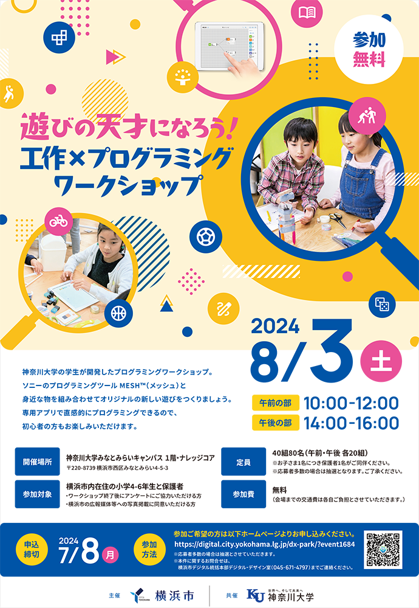
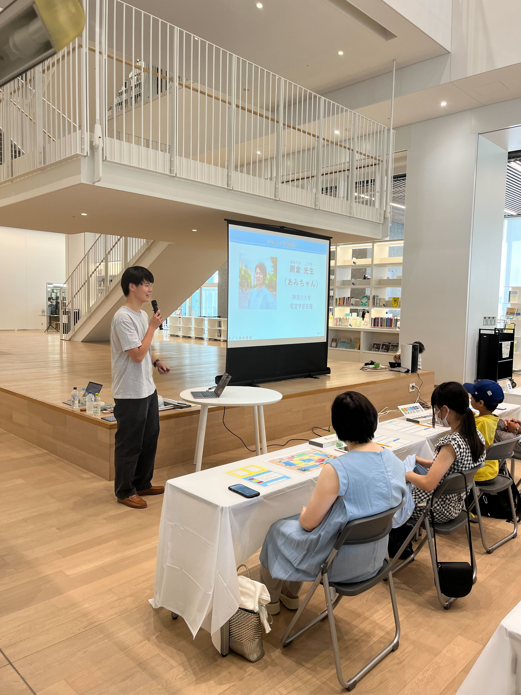
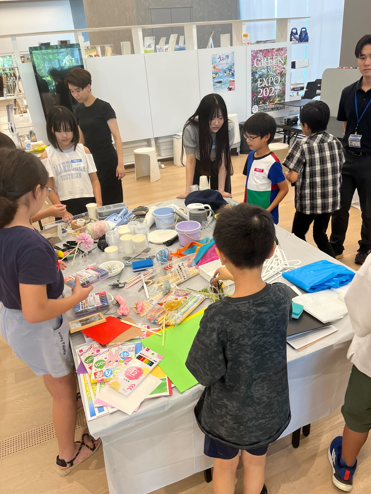
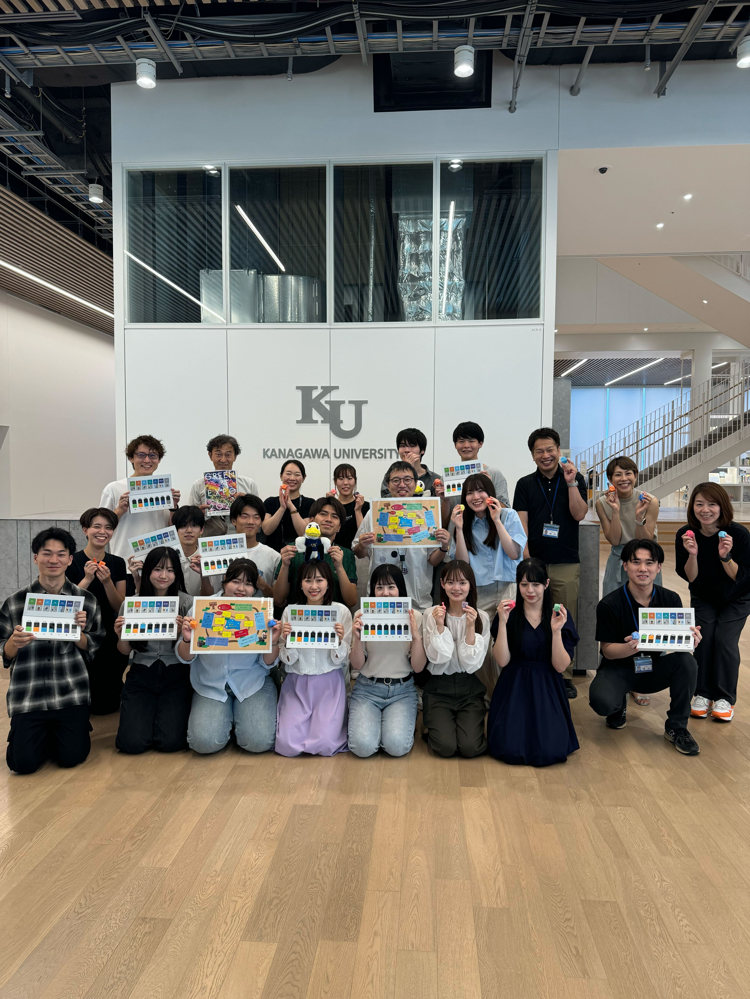

- 8月3日、ついに4ヶ月に及ぶ苦難の結果のワークショップの本番の日を迎えた。横浜市、SONY,爆たち道用ゼミの努力が報われる日だ。
- WSに参加した子供達に大きな進捗の差が起こることなく、みんな楽しそうな顔で作業したり、真剣な顔で考えたり、保護者に自慢げに作品の説明をしていたり満足度の高いWSだった。
- 僕たちが夜遅くまでZOOMで会議したり、それぞれの班が考えプレゼンしたり、横浜市、SONYの皆様からもらった意見を100％詰め込んだWSにすることができてよかったです。
- 僕は基礎班担当だったので大きな仕事をしたわけではないですが、アイスブレイクや最後の周りの作品を見るときのやり方などのアイデアだしで少しは貢献できたのではないかと思っています。
- WSの最後にはゼミ生たちが担当した子たちから作品をプレゼントしてもらったり、写真を撮ったり、短い時間でしたが絆が少しでも生まれたのでないかと感じて感動しました